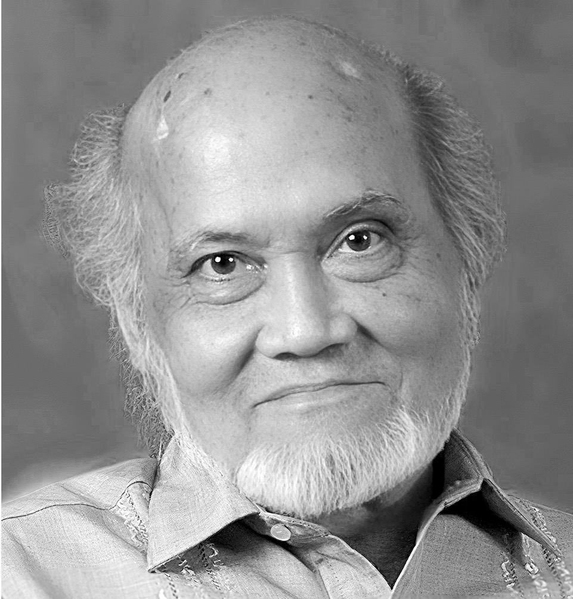

About the Artists

Federico Aguilar Alcuaz
Federico Aguilar Alcuaz was known as a National Artist for Visual Arts and a major Filipino painter. He was known for his Cubist-inspired works across painting, sculpture, and mixed media. He was born on June 6, 1932 in Santa Ana, Manila.
During his college, he pursued an Associate in Arts degree at San Beda College in the evenings while also pursuing a Fine Arts degree at the University of the Philippines in the mornings. Later on, he moved to Barcelona, Spain to start his art career.

Lang Dulay
Lang Dulay is a highly respected T’boli textile artist from Mindanao. She’s known for preserving the traditional art of t’nalak weaving; one of the reasons why she possesses the title of a GAMABA (The Gawad sa Manlilikha ng Bayan) artist back in 1998.
She played a huge role in keeping indigenous weaving traditions alive despite modernization. A master of her craft, she began weaving at a very young age— around 12 years old— learning from her mother and elders in her community. Weaving wasn’t just a skill for her; it was a cultural inheritance.